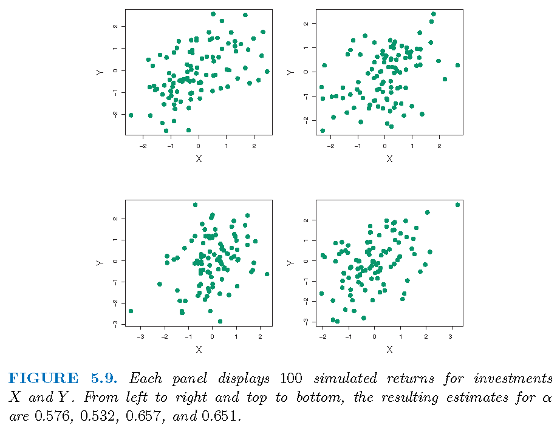
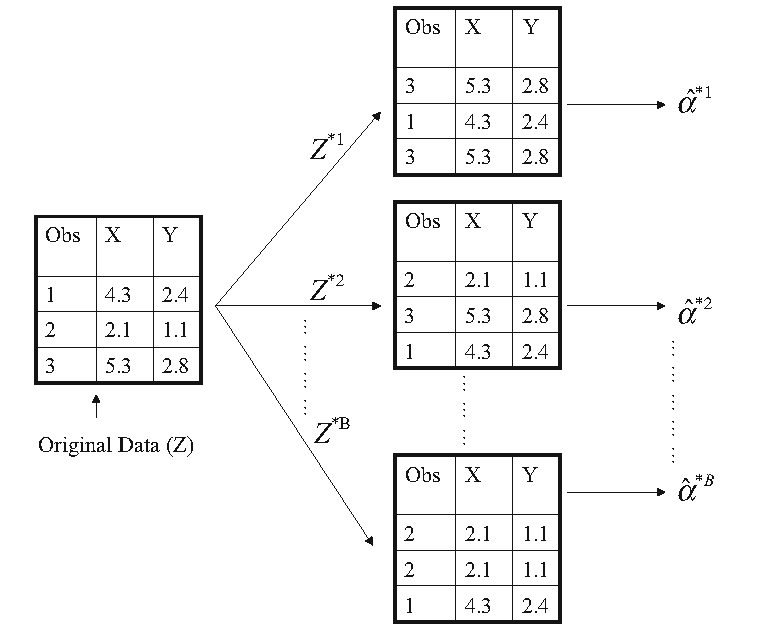
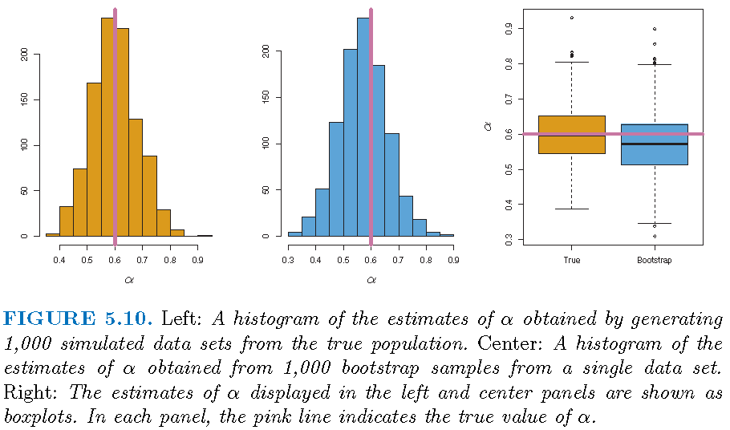

Stat 435 Lecture Notes 4
Xiongzhi Chen
Washington State University

Bootstrap: motivation
Overview
The bootsrtap is mainly used to estimate and quantify the uncertainty associated with a given estimate or statistical learning methed
For example, it can be used to estimate the standard error of an estimate (such as an estimated coefficient in a regression model)
The bootstrap may not work well when sample size is small or when sample comes from a relatively small region of the distribution of an unknown data generating process
Illustration I: problem
Problem formulation:
- suppose we wish to invest a fixed sum of money into two financial assets that yield (random) returns of \(X\) and \(Y\), respectively
- we will invest a fraction \(\alpha\) of our money in \(X\), and the rest \(1-\alpha\) in \(Y\)
- we need to choose \(\alpha\) that minimizes the risk, or variance, of our investment.
Namely, we need to find \(\alpha\) that minimizes \[\textrm{Var}(\alpha X + (1-\alpha)Y)\]
Illustration I: solution
By calculus, we know that \[ \alpha=\frac{\sigma_{Y}^{2}-\sigma_{XY}}{\sigma_{X}^{2}+\sigma_{Y}^{2}-2\sigma_{XY}} \] minimizes \[\textrm{Var}(\alpha X + (1-\alpha)Y),\] where \(\sigma_{X}^{2}=\textrm{Var}(X)\), \(\sigma_{Y}^{2}=\textrm{Var}(Y)\) and \(\sigma_{XY}=\textrm{Cov}(X,Y)\)
However, in reality, the quantities \(\sigma_{X}^{2}\), \(\sigma_{Y}^{2}\) and \(\sigma_{XY}\) are unknown, and need to be estimated
Illustration I: estimate
- With estimates \(\hat{\sigma}_{X}^{2}\), \(\hat{\sigma}_{Y}^{2}\) and \(\hat{\sigma}_{XY}\) for \(\sigma_{X}^{2}\), \(\sigma_{Y}^{2}\) and \(\sigma_{XY}\), respectively, we have the plug-in estimate \[\hat{\alpha}=\frac{\hat{\sigma}_{Y}^{2}-\hat{\sigma}_{XY}}{\hat{\sigma}_{X}^{2}+\hat{\sigma}_{Y}^{2}-2\hat{\sigma}_{XY}}\] for the optimal but unknown solution \[ \alpha=\frac{\sigma_{Y}^{2}-\sigma_{XY}}{\sigma_{X}^{2}+\sigma_{Y}^{2}-2\sigma_{XY}} \]
- How accurate is \(\hat{\alpha}\)? Can we estimate the standard error of \(\hat{\alpha}\)?
Illustration I: estimate
If \(\hat{\sigma}_{X}^{2}\), \(\hat{\sigma}_{Y}^{2}\) and \(\hat{\sigma}_{XY}\) are accurate, then so should be \(\hat{\alpha}\)
How to assess the accuracy of \(\hat{\alpha}\) (via the accuracy of \(\hat{\sigma}_{X}^{2}\), \(\hat{\sigma}_{Y}^{2}\) and \(\hat{\sigma}_{XY}\)) if we have only a sample of size \(n\) at hand?
Mini discussion on the question above: Case 1 “\(n\) small”, Case 2 “\(n\) moderate”, and case 3 “\(n\) large”
Illustration I: simulated samples
If we know the population distribution, we can simulate samples: 
Illustration I: simulated samples
Suppose we simulate \(B=1000\) independent samples for \((X,Y)\) (if we knew the truth), we will have \(B\) estimates \(\hat{\alpha}_{j},j=1,\ldots,B\) of \(\alpha\)
The sample mean \(\bar{\alpha}=\frac{1}{B}\sum_{j=1}^{B}\hat{\alpha}_{j}\) (of \(\hat{\alpha}_{j}\)’s) should be close to \(\alpha\)
The sample standard deviation \[s\left( \hat{\alpha}\right) =\sqrt{\frac{1}{B-1}\sum_{j=1}^{B}\left( \hat{\alpha}_{j}-\bar{\alpha}\right) ^{2}}\] (of of \(\hat{\alpha}_{j}\)’s) should be close to \(\sigma_{\hat{\alpha}}=\sqrt{\textrm{Var}(\hat{\alpha)}}\)
Illustration I: truth and estimate
Truth: \(\sigma_{X}^{2}=1\), \(\sigma_{Y}^{2}=1.25\), \(\sigma_{XY}=0.5\) and \(\alpha=0.6\)
Estimates based on \(B=1000\) simulated, independent samples: \(\bar{\alpha}=0.5996\) and \(s\left( \hat{\alpha}\right)=0.083\)
Interpretation: for a random sample from the population, we would expect \(\hat{\alpha}\) to differ from \(\alpha\) by approximately \(0.08\) on average
Note: is the “1 standard deviation” rule sensible?
Bootstrap: definition and applications
Simulation and double-dipping
- Simulated from the truth: when we know a data generating process, we can simulate samples to estimate a statistic on the process. However, if we know the truth, why do we need to estimate the statistic?
- Simulated from the estimate: with a sample from a data generating process, we can estimate the process, use the estimated process to generate samples, and use the generated samples to estimate a statistic
- Resampling from the sample: sample randomly from a sample from a data generating process, regard the sampled observations as a new data set, and use them to estimate a statistic
Bootstrap: definition
In order to assess the distributional properties of an estimate of a statistic, the bootstrap
- takes a subset of a given data set as if it is a set of new observations independent of the given data set
- uses the subset to obtain an estimate of the statistic
- does so repeatedly and independently using different subests of the given data set
- take the empirical distribution of estimates obtained from these subsets as an estimate of the distribution of the estimate of the statistic
Bootstrap: procedure
- Given a sample of size \(n\), let \(\hat{\alpha}\) be an estimate of a statistic \(\alpha\) obtained from the sample
- Sample randomly with replacement from the sample to obtain \(n\) observations, and do this independently \(B\) times to obtain \(B\) bootstrap samples \(S_{j},j=1,\ldots,B\)
- Let \(\hat{\alpha}_{j}\) be the estimate of \(\alpha\) obtained from \(S_{j}\). Then the empirical distribution \(G\) of \(\hat{\alpha}_{j},j=1,\ldots,B\) is used as the (true) distribution of \(\hat{\alpha}\), and statistics about \(\hat{\alpha}\) are obtained from \(G\)
Bootstrap: graphical illustration

Bootstrap: statistics
- The (bootstrap) estimated mean of \(\hat{\alpha}\) is \(\bar{\alpha}=\frac{1}{B}\sum_{j=1}^{B}\hat{\alpha}_{j}\)
- The (bootstrap) estimated variance of \(\hat{\alpha}\) is \[ \textrm{SE}^2\left( \hat{\alpha}\right) = {(B-1)}^{-1}\sum_{j=1}^{B}\left( \hat{\alpha}_{j}-\bar{\alpha}\right)^{2} \]
- For \(\alpha \in (0,1)\), the (bootstrap) \((1-\alpha)\times 100\) percent confidence interval for \(\hat{\alpha}\) is \((c_L,c_U)\), where \(c_L\) is the \(\{0.5\alpha\times 100\}\)th percentile of \(G\), and \(c_L\) is the \(\{(100-0.5\alpha)\times 100\}\)th percentile of \(G\)
Illustration of bootstrap
Bootstrap applied to a sample; \(\textrm{SE}^2\left( \hat{\alpha}\right)=0.087\): illusion or excellence? 
Boostrapping linear regression
Linear regression
Model: \(Y=\beta_0+\beta_1 X_1 + \beta_2 X_2 + \ldots + \beta_p X_p + \varepsilon\) with \(E(\varepsilon)=0\) and \(\textrm{Var}(\varepsilon)=\sigma^2\)
Observations: \((y_i,x_{1i},x_{2i},\ldots,x_{pi}),i=1,\ldots,n\), where \(x_{ji}\) is the \(i\)th observation for \(X_j\)
Estimate: \(\hat{y}=\hat{\beta}_0+\hat{\beta}_1 X_1 + \hat{\beta}_2 X_2 + \ldots + \hat{\beta}_p X_p\)
Fit: \(\hat{y}_i=\hat{\beta}_0+\hat{\beta}_1 x_{1i} + \hat{\beta}_2 x_{2i} + \ldots + \hat{\beta}_p x_{pi}+\varepsilon_i\)
Residuals: \(e_i = y_i - \hat{y}_i\)
Bootstrapping from sample
Set \({\boldsymbol{\beta}}=({\beta}_0,{\beta}_1,\ldots,{\beta}_p)\) and \(\hat{\boldsymbol{\beta}}=(\hat{\beta}_0,\hat{\beta}_1,\ldots,\hat{\beta}_p)\)
- Sample from data generating process: \[S=\{\mathbf{z}_i=(y_i,x_{1i},x_{2i},\ldots,x_{pi}),i=1,\ldots,n\}\]
- Sample with replacement \(n\) observations from \(S\) and repeat this independently to obtain \(B\) subsets \(S_j,j=1,\ldots,B\)
- Obtain \(\hat{\boldsymbol{\beta}}_j\) from \(S_j\) for each \(j=1,\ldots,B\)
- Use the empirical distribution of \(\hat{\boldsymbol{\beta}}_j,j=1,\ldots,B\) as the distribution of \(\hat{\boldsymbol{\beta}}\)
Bootstrapping residuals
- Residuals: \(R=\{e_i=y_i-\hat{y}_i,i=1,\ldots,n\}\)
- Sample with replacement \(n\) observations from \(R\) to obtain \(B\) sets of residuals \(R_j=\{e_i^{(j)},i=1,\ldots,n\}\)
- For each \(j\), set \(y_i^{(j)}=\hat{y}_i+e_i^{(j)}\) and fit the model with observations \[S_j=\{\mathbf{z}_i^{(j)}=(y_i^{(j)},x_{1i},x_{2i},\ldots,x_{pi}),i=1,\ldots,n\}\] and obtain estimate \(\hat{\boldsymbol{\beta}}_j\)
- Use the empirical distribution of \(\hat{\boldsymbol{\beta}}_j,j=1,\ldots,B\) as the distribution of \(\hat{\boldsymbol{\beta}}\)
Bootstrapping samples or residuals
Asymptotically (and under some conditions), bootstrapping samples and bootstrapping residuals are equivalent
Bootstrapping samples is less sensitive to model misspecification
Bootstrapping samples may be less sensitive to the assumptions concerning independence or exchangeability of the error terms
Boostrap: failures
Boostrap failures
Bootstrap can fail
- when sample size is too small
- for estimating extremal statistics
- when observations are dependent
- for survey sampling
Note: the book “Bootstrap methods: a guide for practitioners and researchers” by Michael R. Chernick contains more information on this.
License and session Information
> sessionInfo()
R version 3.5.0 (2018-04-23)
Platform: x86_64-w64-mingw32/x64 (64-bit)
Running under: Windows 10 x64 (build 19041)
Matrix products: default
locale:
[1] LC_COLLATE=English_United States.1252
[2] LC_CTYPE=English_United States.1252
[3] LC_MONETARY=English_United States.1252
[4] LC_NUMERIC=C
[5] LC_TIME=English_United States.1252
attached base packages:
[1] stats graphics grDevices utils datasets methods
[7] base
other attached packages:
[1] knitr_1.21
loaded via a namespace (and not attached):
[1] compiler_3.5.0 magrittr_1.5 tools_3.5.0
[4] htmltools_0.3.6 revealjs_0.9 yaml_2.2.0
[7] Rcpp_1.0.3 stringi_1.2.4 rmarkdown_1.11
[10] stringr_1.3.1 xfun_0.4 digest_0.6.18
[13] evaluate_0.12